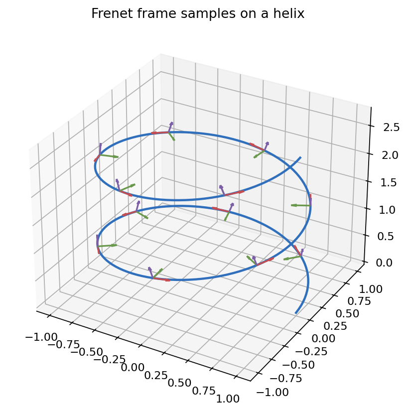
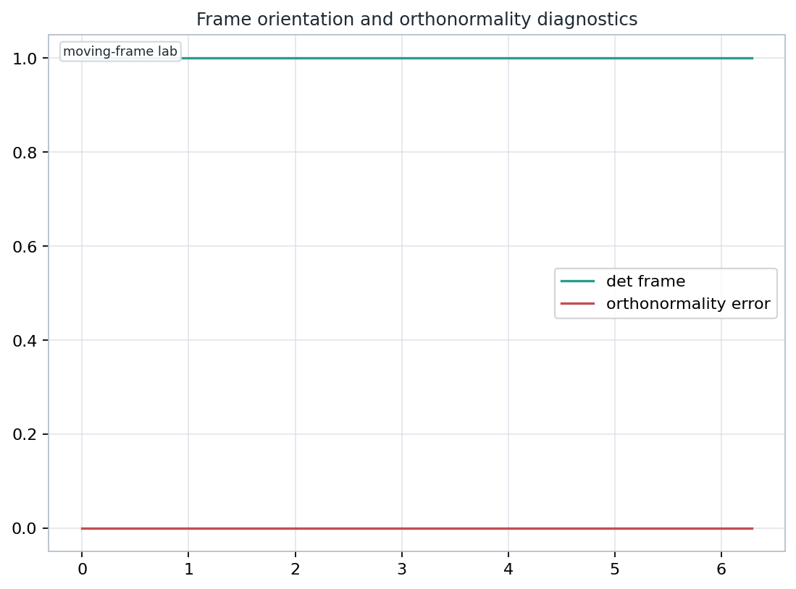

Elementary Differential Geometry
A lecture on orthonormal frames, Frenet data, connection forms, dual forms, and structural residuals in three-dimensional differential geometry.
Route
Frame fields are the bridge between geometric pictures and computable invariants. They let us ask whether a change is caused by the shape, by the parameter, or by the chosen measuring frame.
Inspection target: every formula should name what is being measured and what must stay unchanged.
Metric First
<v, w> = length(v) length(w) cos angle(v,w)
Definition
A frame field on a region assigns ordered vector fields E1, E2, E3 so that each point receives a basis. It is orthonormal when the local dot products satisfy the identity pattern.
Computation
If Q = [E1 E2 E3], then an oriented orthonormal frame is detected by two small matrix tests.
Curves
Frenet Data
Curvature turns the tangent. Torsion twists the osculating plane.
Interpretation
Large kappa means the tangent direction changes rapidly with arclength.
Large tau means the curve is leaving its instantaneous plane quickly.
Curvature alone does not tell whether the curve lives in a plane.
Differentiating Fields
A derivative in ambient space may point partly away from the tangent plane. The covariant derivative extracts the change that remains tangent to the surface or frame domain.
Coframe
Given frame vectors E1, E2, E3, the dual forms omega1, omega2, omega3 report coordinates of tangent data in that frame.
Connection Forms
The connection form omega_ij measures the component of the change of Ej in the Ei direction.
Skew symmetry is forced by preserving orthonormality.
Structure
In Euclidean three-space, these identities act like consistency checks for the chosen frame and coframe.
| Check | Meaning | Pass Signal |
|---|---|---|
| orthonormality | frame preserves metric | near zero |
| wedge antisymmetry | forms obey orientation algebra | true |
| structure residual | frame equations close | zero or tolerance small |
Notebook Evidence

Local asset: ../diagnostic-geometry.png
Applied Lab

Misconceptions
A vector drawn at the wrong point may look parallel but it is not the same tangent datum.
Velocity depends on the parameter. Unit tangent and arclength remove that dependence.
Pairwise orthogonality can survive reflection, while the determinant changes sign.
An ambient derivative can leave the tangent plane unless it is projected back.
Connection-form signs affect structural residuals and Frenet equations.
A frame diagram teaches only when it names the measured invariant.
Synthesis
Translate the geometric object into frame data, compute the relevant forms or rates, and check the residual that should vanish or stay small.
This habit turns definitions into inspectable claims rather than memorized vocabulary.
Recap